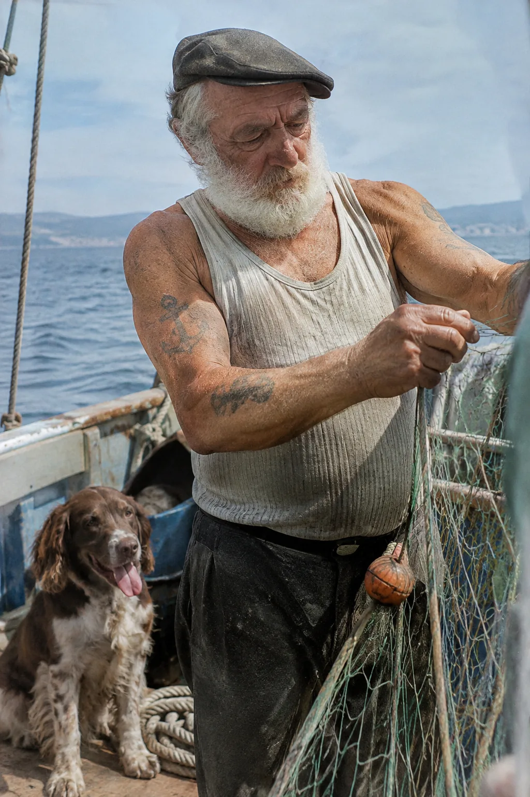
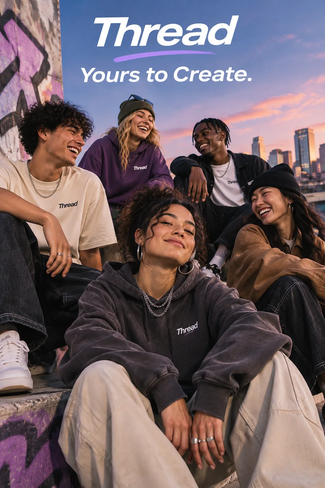
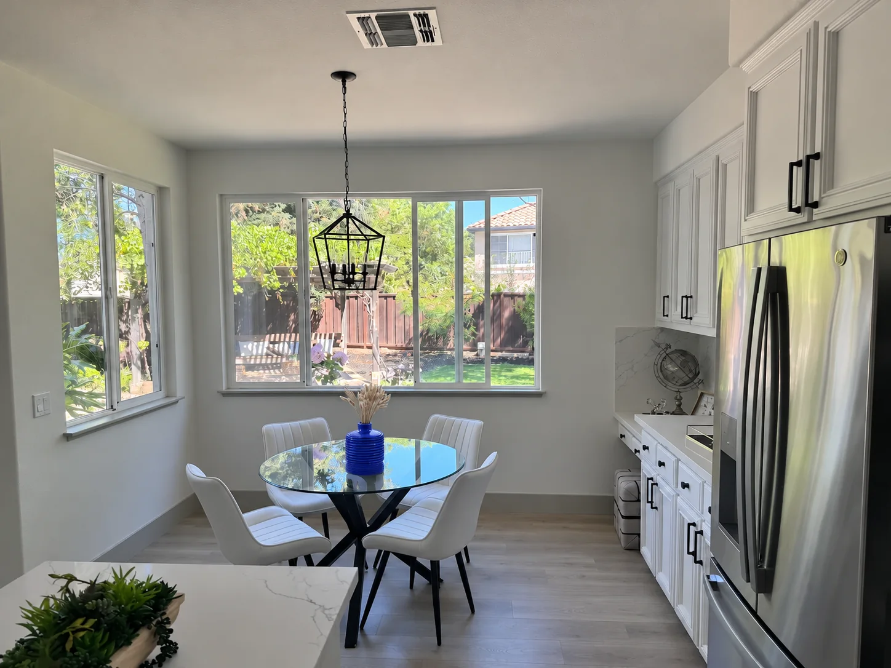
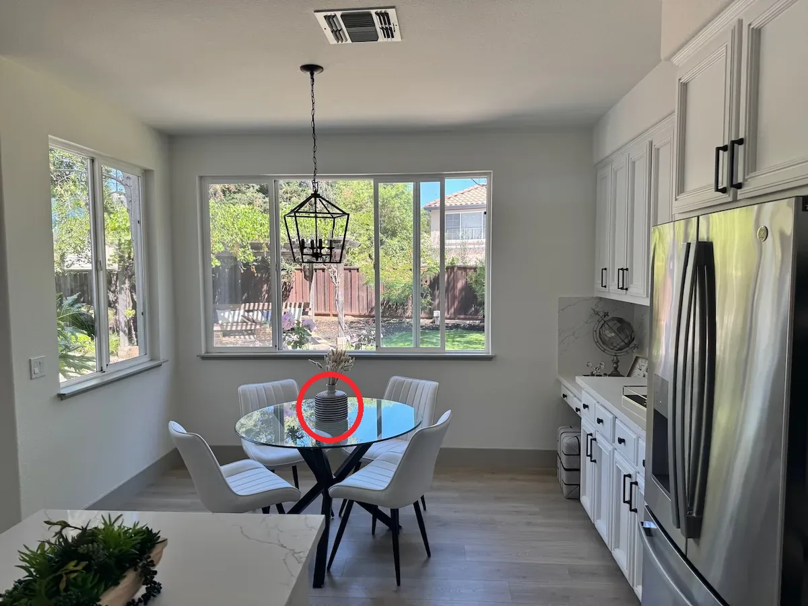
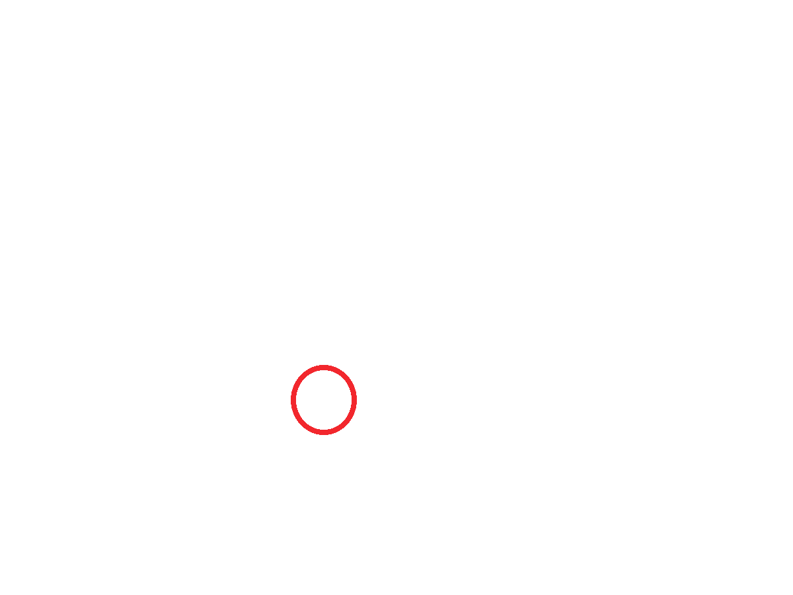
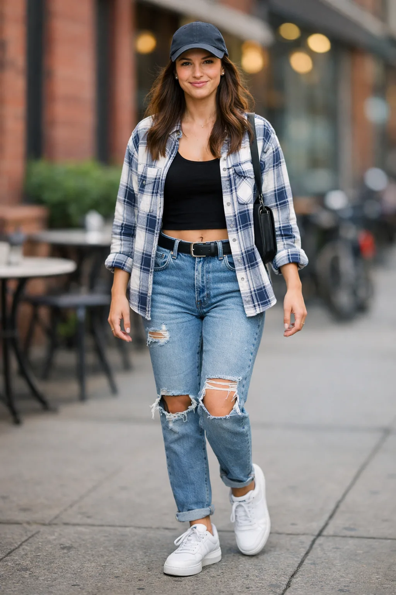
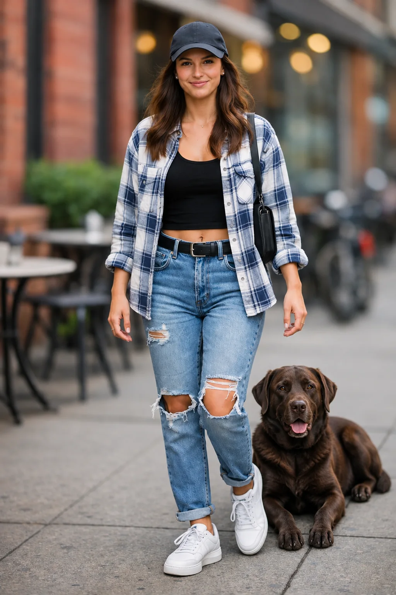
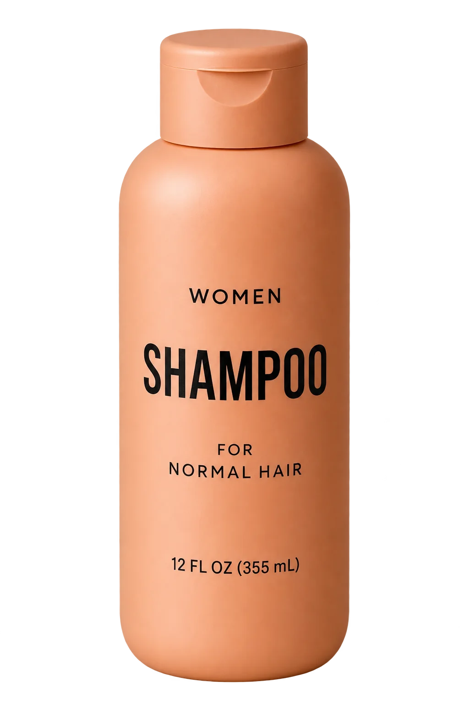

GPT Image 2.6의 본질은 그림을 그리는 화가가 아니라, 도면을 읽는 건축 감리사에 가깝습니다.
'분위기 있는', '멋진' 같은 감정어를 버리고 렌즈, 광원, 질감, 텍스트를 물리적으로 명세할 때
비로소 상상했던 픽셀이 그대로 꽂힙니다.

OpenAI 공식 가이드 기반 · 실전 이미지 프롬프팅 특강
이미지는 그리는 것이 아니라 명세(Spec)하는 것이다
Flare vs Sunburst 듀얼 엔진과 2.6 생성 패러다임의 도약
다루는 모델 & 도구gpt-image-2.6-flare · gpt-image-2.6-sunburst · Markup Overlay
생성형 AI · 바이브코딩 전문강사
오진실
공공기관과 복지 현장, 대학, 청년, 학생에게 생성형 AI와 바이브코딩, 에이전트 실무를 가르칩니다. 대충 뽑는 운이 아니라, 엔지니어링 관점에서 검증된 결과물을 만드는 수업을 합니다.
72회최근 1년 출강
250+누적 실습 차시
30+곳출강 교육장
56+개피클 에이전트 실전 대리
- 전주대학교 HUSS 바이브코딩 경진대회 사전 특강 강사 (2026.11)
- 목포AI실험실 모임장 · 커뮤니티 오디세이 운영
- 전라남도 사회복지협의회 퍼블릭 AI 전문강사
- 디지털새싹 초·중·고 AI·코딩 캠프 강사·슈퍼바이저
CHAPTER 1
패러다임의 도약
이미지 생성은 '운'이 아니라 '스펙 명세'다
대충 키워드를 던져서 잘 나오길 기도하는 시대는 끝났다
Threads Best Practice
@choi.openai
스레드 원문 보기 ↗
감정어를 버리고 물리 스펙으로 말하라
이미지 생성 모델 3세대의 진화
1세대 (키워드 복권)
masterpiece, 8k, detailed... 콤마로 단어를 나열하며 잘 나오길 기도
→
2세대 (문장형 묘사)
자연어를 이해했으나 철자 깨짐, 손가락 왜곡, 기존 이미지 수정 불가
→
3세대: GPT Image 2.6
렌즈·질감 명세, 네이티브 SVG/GIF, 마크업 빨간 원 부분 편집
CHAPTER 2
Flare vs Sunburst 듀얼 엔진
작업 목적에 따른 2대 전용 모델 선택
속도와 정밀도의 명확한 분업으로 시간과 비용을 60% 절감한다
gpt-image-2.6-flare
gpt-image-2.6-sunburst
평균 생성 속도 5~8초 (초고속 탐색)
→
평균 생성 속도 15~25초 (심층 렌더링)
경제적인 토큰 비용 (약 50% 절감)
→
표준 프로덕션 비용 (최고 화질)
구도 잡기, 색감 탐색, 빠른 A/B 테스트
→
최종 납품용 광고, 로고(SVG), 인포그래픽
전체적인 씬(Scene) 구성에 특화
→
정밀 텍스트 타이포그래피, 마크업 오버레이
Threads Best Practice
@geumverse_ai
2.6 업데이트의 핵심은 속도와 일관성입니다.
Flare로 6초 만에 4~5개 구도를 뽑아 컨펌을 받고, 채택된 구도의 시드와 프롬프트를
Sunburst로 넘겨 최종 고화질 렌더링하세요. 토큰 비용과 시간이 극적으로 줄어듭니다.
스레드 원문 보기 ↗
스레드 실무자들의 2-Tier 파이프라인
현업 실무자의 3단계 프로덕션 루틴
무작정 무거운 모델로 처음부터 디테일을 넣지 않는다
STEP 1
STEP 2
STEP 3
2.6으로 넘어올 때 버려야 할 것 vs 취할 것
구버전 Midjourney/DALL-E 습관을 즉시 폐기해야 하는 이유
구시대 습관 (버릴 것)
2.6 표준 (정착시킬 것)
masterpiece, 8k 등 수식어 도배 (노이즈로 작용)
→
35mm f/1.8, 울 니트 질감 등 물리적 스펙 명세
no extra fingers 등 부정 프롬프트 남발
→
무엇이 존재해야 하는지를 명확한 명사로 선언
맘에 안 들면 '다시 생성' 무한 반복 (크레딧 낭비)
→
마크업 투명 오버레이로 원하는 영역만 핀포인트 수정
2차시
핵심 설계 원칙 8가지 : 프롬프트는 스펙 명세서다
CHAPTER 1
OpenAI 공식 가이드 8대 원칙
원칙 1~4 : 피사체와 공간을 통제하는 기초 4원칙
1. 결과물 정의 (Deliverable)
'강아지 그림'이 아니라 '35mm 필름 실사 사진', '플랫 벡터 SVG 로고'로 매체 못박기
→
2. 구조화된 포맷 (Structure)
줄글을 지양하고 [- Subject:], [- Lighting:], [- Camera:] 마크다운 불릿 사용
→
3. 물리적 디테일 (Visuals)
'분위기 있는 조명' 대신 '오후 5시 골든아워 측광(Side light), 굵은 울 니트 질감'
→
4. 인물과 동작 (Pose & Action)
'남자가 서 있다' 대신 '키를 양손으로 쥐고 먼 수평선을 응시하며 굳은 표정'
원칙 5~8 : 부분 수정과 고급 제어를 지탱하는 핵심 4원칙
5. 텍스트 엄격 격리 (Quotes)
간판이나 로고에 들어갈 문구는 반드시 "Exact Text" 큰따옴표로 표기
→
6. 변경 vs 보존 제약 분리
수정 요청 시 [Change]: 바꿀 부분과 [Preserve]: 절대 건드리지 말 부분 격리
→
7. 다중 레퍼런스 역할 명시
Image 1은 얼굴과 표정 참조, Image 2는 의상 디자인과 색상 참조로 역할 분담
→
8. 단계적 점진 개선 (Iterate)
한 번에 다 넣지 말고 기본 구도 확정 → 디테일 추가 → 부분 편집의 순서 준수
CHAPTER 2
공식 실습 : 35mm 필름 선원
공식 가이드 실습 1 : 35mm 필름 감성의 노련한 선원
바다 위에서 배를 몰고 있는 멋진 늙은 선원의 실사 사진을 그려줘
8대 원칙을 철저히 준수한 물리 스펙 명세서
물리 스펙이 만든 실사 렌더링의 완성도
피사계 심도와 필름 그레인
선원 얼굴의 림라이트와 바다 수평선의 부드러운 아웃포커스가 완벽히 분리됨
감정어(Mood words)를 버리고 물리 스펙으로 말하라
스레드 @choi.openai가 강조하는 프롬프트 치환 사전
초보자의 감정어 (결과 불확실)
프로의 물리 스펙 (2.6 엔진 최적화)
고급스러운 프리미엄 제품
→
무광 세라믹 질감, 측면 45도 소프트박스 반사광, 샌드톤 배경
신비롭고 몽환적인 숲
→
아침 안개 사이로 쏟아지는 티달 광선(Tyndall ray), 젖은 이끼 하이라이트
역동적인 달리기 선수
→
1/2000초 고속 셔터, 튀어 오르는 물방울 입자 동결, 로우 앵글
따뜻하고 아늑한 카페
→
2700K 텅스텐 조명, 월넛 원목 테이블의 나뭇결, 라떼 표면의 미세 거품

3차시
생성 파라미터 & 제어 테크닉 : SVG, GIF, 타이포그래피
CHAPTER 1
Complexity와 Quality 파라미터
GPT Image 2.6 핵심 제어 파라미터
Quality (auto | low | med | high | max)
노이즈 제거 스텝 수와 세밀한 텍스처를 결정. 납품용에는 high 또는 max 필수
→
Complexity (low | medium | high)
2.6에서 신설된 계획 깊이 파라미터. 공간적 레이어와 기하학적 복잡도를 좌우
→
Output Format (png | jpeg | webp | svg | gif)
비트맵을 넘어 웹 표준 벡터(SVG)와 무한 루프 애니메이션(GIF)을 네이티브 지원
Complexity 파라미터 실증 : 페이퍼 아트 축구 트로피
동일 프롬프트에서 모델의 구조적 계획 깊이에 따른 입체감 차이
complexity="low" (단순 평면형 레이어)
complexity="high" (극대화된 다층 입체 레이어)
2~3단계의 단순한 종이 오리기 구조
→
수십 겹의 정교한 종이 레이어와 미세한 그림자 틈새
플랫 그래픽, 가벼운 아이콘에 최적화
→
전시회급 아트워크, 깊이감 있는 3D 조명 반사
빠른 렌더링과 낮은 토큰 소모
→
심층 추론 기반 고밀도 텍스처 렌더링
CHAPTER 2
차세대 포맷 : 네이티브 SVG
차세대 포맷 1 : 네이티브 벡터 SVG 출력 (Field & Flour)
일러스트레이터와 웹에서 즉시 쓸 수 있는 순수 벡터 패스
네이티브 SVG 벡터 렌더링 결과

해상도 무한 확장 & CSS 애니메이션 대응
웹 프론트엔드에 인라인으로 삽입하여 호버 시 색상 전환이나 모션 효과 적용 가능
CHAPTER 3
차세대 포맷 : 루핑 애니메이션 GIF
차세대 포맷 2 : 루핑 애니메이션 GIF (등불 든 아기 원숭이)
첫 프레임과 끝 프레임이 완벽히 이어지는 무한 루프
루핑 애니메이션 GIF 생성 결과

끊김 없는 무한 루프 애니메이션
웹사이트 배너, SNS 숏폼 스티커, 게임 인터페이스에 즉시 활용 가능
CHAPTER 4
오타 없는 정확한 텍스트 렌더링
타이포그래피 포스터 : "Yours to Create" 스트리트 패션 광고
철자 깨짐을 극복한 타이포그래피 엔진
정확한 영문 타이포그래피 렌더링

오타 제로 & 인쇄용 그래픽 레이아웃
스트리트 패션 브랜드의 거친 질감과 선명한 폰트 디테일이 완벽 조화

4차시
부분 편집 & 수정 마스터 : 외과수술식 수정의 시대
CHAPTER 1
마크업 오버레이 (Markup Overlay)
처음부터 다시 뽑지 마라
90%를 보존하고 오직 타깃 부위만 정밀 교체하는 핀포인트 수정
마크업 오버레이 3단계 프로세스
투명 PNG 위에 붉은색 원이나 화살표를 그려 전달하기만 하면 끝

스크린샷 마크업1단계: 식탁 위 줄무늬 꽃병 원본 이미지

스크린샷 마크업2단계: 수정할 영역에 빨간색 동그라미 마크업
스크린샷 마크업
3단계: 테이블과 배경은 100% 보존, 꽃병만 코발트 블루로 완벽 치환
Threads Best Practice
@total_nlp
포토샵이나 인페인팅 툴에서 복잡하게 브러시로 마스크를 문지르지 마세요.
캔바나 피그마에서 원본 위에 반투명 빨간 원 하나 얹고 투명 PNG로 내보낸 뒤 지시하세요.
"Replace the object inside the red markup circle with a glossy cobalt-blue ceramic vase. Keep everything else strictly identical."
이게 프로들의 10초 부분 편집 공식입니다.
스레드 원문 보기 ↗
투명 오버레이로 콕 집어 변경하기
CHAPTER 2
레이아웃 100% 보존 다국어 번역
커피 머신 인포그래픽 : 스페인어 → 영문/한국어 치환
부품 다이어그램과 화살표 위치를 1픽셀도 건드리지 않고 텍스트만 교체
원본 (스페인어 라벨 인포그래픽)
편집본 (영문/한국어 번역본)
Caldera (보일러 라벨 표기)
→
Boiler (정확한 영문으로 번역 치환)
Bomba de agua (워터 펌프)
→
Water Pump (레이아웃 위치 100% 고정)
Portafiltro (포터필터)
→
Portafilter (폰트 크기 및 화살표 완벽 유지)
CHAPTER 3
인물 일관성 & 의상 교체 (Fashion Swap)
얼굴과 체형은 유지하고 의상만 신상으로 피팅하기
이커머스 패션 쇼핑몰을 위한 [Change] vs [Preserve] 분리 공식
인물 일관성 유지 의상 교체 렌더링

얼굴 왜곡 제로 & 사실적인 실크 텍스처
고가의 모델 촬영 비용을 1회로 줄이고 수십 종의 신상 룩북을 즉시 파생
CHAPTER 4
다중 레퍼런스 합성 & 누끼 추출
다중 레퍼런스 결합 : 인물 사진 + 반려견 합성

단독 실내 인물 사진
원래 배경과 조명을 분석하여 새로운 씬의 광원과 동기화

자연스러운 조명과 시선 교감
소파 위에서 반려견과 함께 있는 장면으로 원근감과 반사광 완벽 통합
투명 배경 누끼 추출 & 러프 스케치 실사화

샴푸 용기 배경 분리
반투명 플라스틱 굴절과 텍스트 라벨을 손상 없이 보존하며 투명 배경 생성

낙서 협곡의 실사 렌더링
손그림의 지형 능선과 강줄기 구도를 그대로 유지하며 웅장한 자연광 렌더링

5차시
실전 베스트 프랙티스 & 커뮤니티 응용 : UI 목업, IR덱, 4컷툰
CHAPTER 1
현업 비즈니스 템플릿
베스트 프랙티스 1 : 모바일 앱 UI 목업 (로컬 파머스 마켓)
피그마급 디테일과 스마트폰 프레임이 결합된 상용급 화면
모바일 앱 UI 목업 렌더링
아이폰 프레임 패키징 & 정밀 UI
스타트업 앱 기획서, 투자 제안서, 포트폴리오에 별도 목업 툴 없이 즉시 활용
베스트 프랙티스 2 : YC 스타일 IR 피치덱 (시장 기회 슬라이드)
숫자 타이포그래피와 다이어그램이 어긋나지 않는 발표 슬라이드
스타트업 IR 피치덱 슬라이드 렌더링

TAM / SAM / SOM 다이어그램 완성도
발표용 슬라이드 한 장을 별도 PPT 디자인 외주 없이 완성도 높게 제작
CHAPTER 2
캐릭터 일관성 동화책 & 4컷 만화
캐릭터 일관성 유지를 위한 3대 앵커(Anchor)
1. 고유 식별자(Identifier) 고정
이름, 나이, 머리색, 주근깨, 헐렁한 머스타드 후드티 등 시각적 닻을 명시
→
2. 레퍼런스 시드 및 이미지 고정
1번 씬의 결과물을 Image 1로 넣고 [Same character in new scene] 선언
→
3. 화풍과 미디어 패밀리화
따뜻한 수채화 과슈 텍스처 등 동일한 아트 스타일 키워드를 전 씬에 유지
베스트 프랙티스 3 : 4컷 숏폼 릴스 / 인스타툰 만화 컷
단일 프롬프트로 4개 패널의 서사와 일관된 캐릭터 웹툰 생성
4컷 인스타툰 만화 렌더링

완벽한 패널 분할과 캐릭터 표정
인스타그램 릴스, 웹툰 컷, 카드뉴스 콘텐츠 제작에 최적화된 만화 덱
CHAPTER 3
종합 정리 & 실무 치트키
목적별 최적 모델 & 파라미터 매트릭스
상황에 따라 복사해서 쓰는 엔지니어링 세팅 치트시트
업무 목적 및 환경
추천 모델 · Quality · Complexity · Format
러프 시안 탐색 / 브레인스토밍
→
flare | auto | low | webp (6초 생성으로 10개 구도 확보)
실사 인물 / 제품 광고 촬영
→
sunburst | high | medium | png (렌즈·조명·질감 명세)
기업 로고 / 벡터 아이콘
→
sunburst | high | low | svg (순수 벡터 패스 출력)
SNS 루핑 배너 / 숏폼 스티커
→
sunburst | medium | medium | gif (심리스 무한 루프)
인포그래픽 / 텍스트 다국어 번역
→
sunburst | max | high | png (큰따옴표 격리 + 레이아웃 고정)
특정 부위 외과수술 부분 편집
→
sunburst | high | medium | png (마크업 빨간 원 + Preserve)
이미지는 더 이상 그리는 것이 아니다
원하는 세상을 엔지니어링 관점에서 명세(Spec)하라